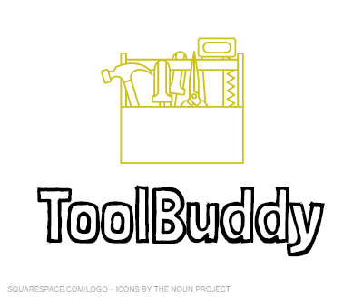

Resume
ABOUT
What we cannot create, we do not understand. Crafting tools by our knowledge and own hands, aim to make the world a better place.
RECORD
70%
papogen
5
FLIGHTS
TEAM MEMBERS
SKILLS
| Programming Language | Proficiency |
|---|
| C++ | 80% |
| Node.js | 70% |
EDUCATION
National Cheng Kung University
INTERESTS
Pellentesque habitant morbi tristique senectus et netus et malesuada fames ac turpis egestas. Vestibulum tortor quam, feugiat vitae, ultricies eget, tempor sit amet, ante. Donec eu libero sit amet quam egestas semper. Aenean ultricies mi vitae est. Mauris placerat eleifend leo.
Pellentesque habitant morbi tristique senectus et netus et malesuada fames ac turpis egestas. Vestibulum tortor quam, feugiat vitae, ultricies eget, tempor sit amet, ante. Donec eu libero sit amet quam egestas semper. Aenean ultricies mi vitae est. Mauris placerat eleifend leo.
AWARDS
- Awards 1
- Awards 2
- Awards 3
- Awards 4
VOLUNTEER WORK

REFERENCES
NCKU Student
NCKU Studentpapogen -s test/ -o docs/ -t papoGen`x = (-b +- sqrt(b^2-4ac))/(2a) .`